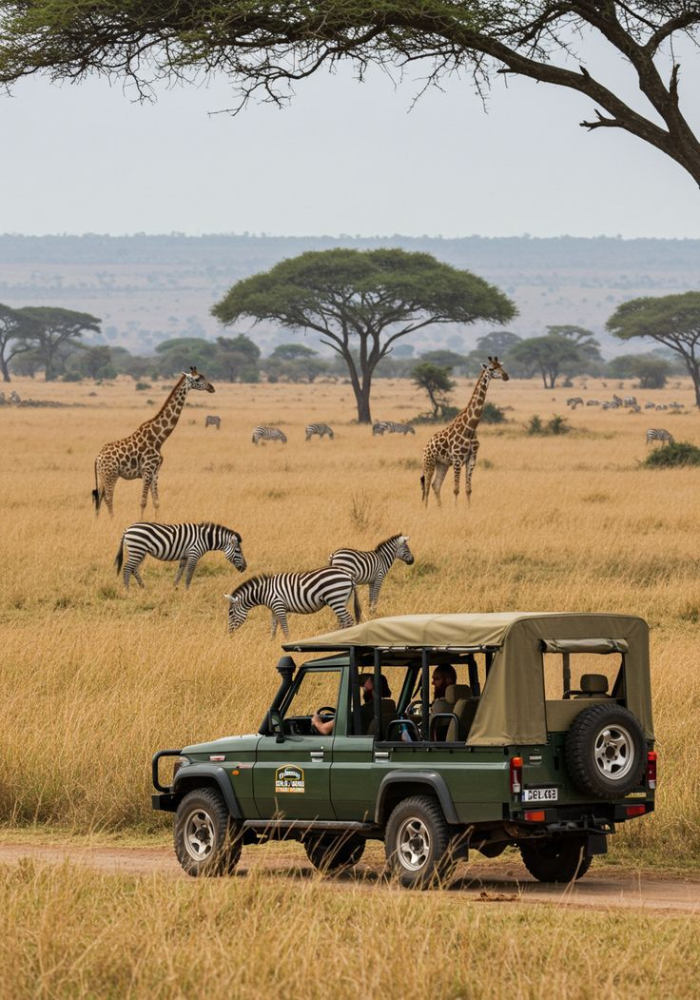

Chronicles of
The Wild
Expert guides, photography tips, and untamed stories from the heart of Tanzania and Zanzibar.
FEATURED

The Great Migration:
A Front Row Seat
Discover the untamed rhythms of the Serengeti as millions of wildebeest cross the plains. Here is our expert guide on where to position yourself for the greatest wildlife spectacle on earth.

Mastering Golden Hour Photography
Camera settings and positioning secrets from our head guides to capture the perfect leopard silhouette.

Physical Prep for Kilimanjaro
A 12-week training regimen designed by our summit team to get your body mountain-ready.
Read Article
The Hidden Spice Markets
Beyond the beaches: walking the ancient alleys of Stone Town to find authentic local flavors.
Read Article
The Ultimate Packing List
Neutral tones, layers, and the exact gear you need for a comfortable luxury adventure.
Read Article
Meeting the Maasai
How to engage respectfully with the traditional stewards of the land and learn their ways.
Read ArticleTop 5 Serengeti Lodges
Our curated list of the most luxurious, eco-friendly, and secluded camps in Tanzania.
Read Article
Stories from the
Savanna
Join our exclusive mailing list. Receive breathtaking photography, hidden itineraries, and luxury travel tips straight to your inbox once a month.